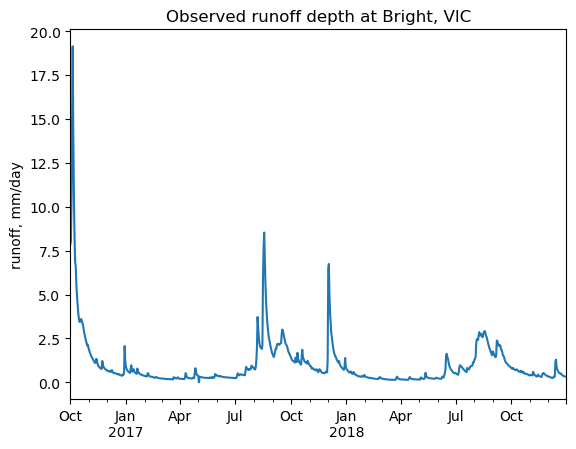
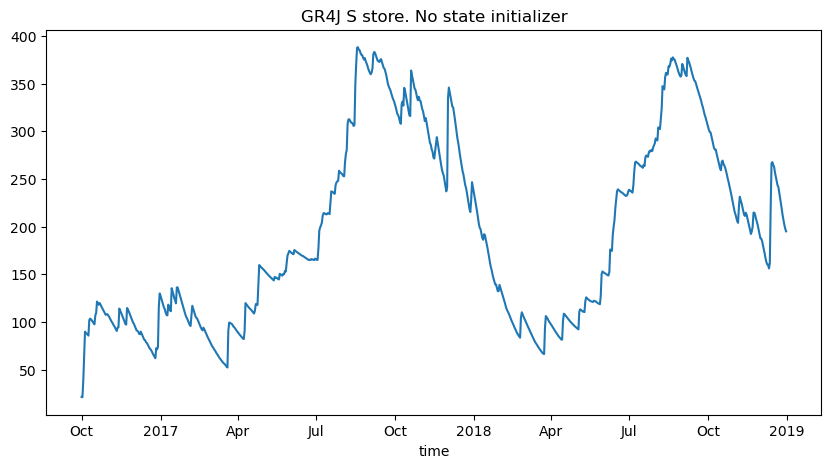
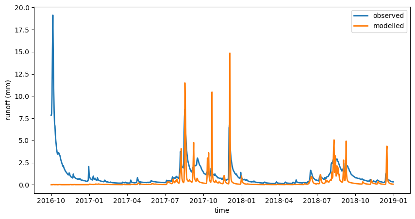
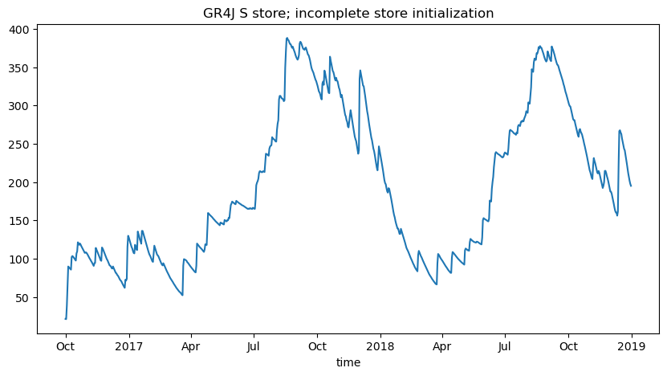
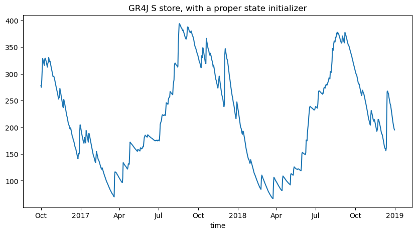
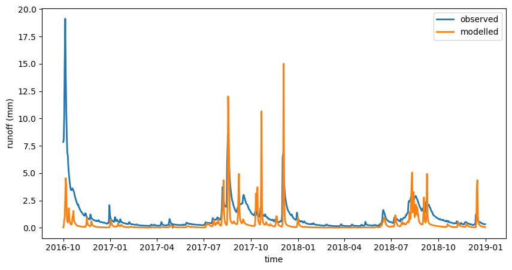
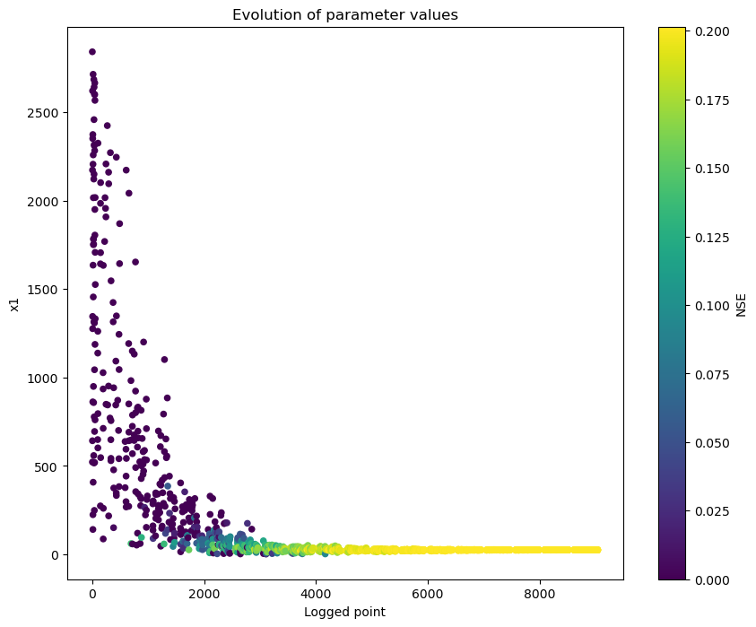
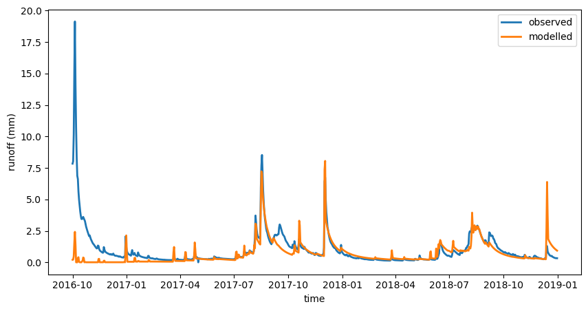
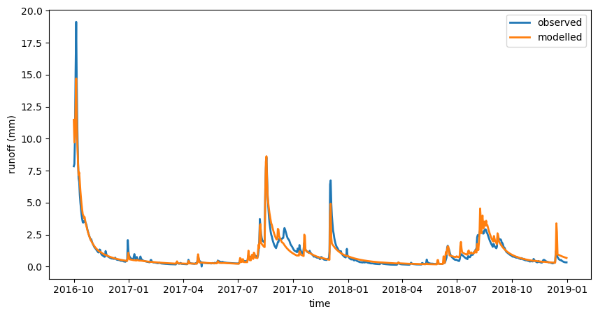

Calibration with initial model memory states as parameters¶
About this document¶
from swift2.doc_helper import pkg_versions_info
print(pkg_versions_info("This document was generated from a jupyter notebook"))
This document was generated from a jupyter notebook on 2025-03-27 17:22:56.511902
swift2 2.5.1
uchronia 2.6.2
This vignette will illustrate how to define two meta-parameters, S0 and R0, controlling the initial level of stores in the GR4J model, as fraction of the store capacities.
We'll load a simple catchment with one subarea only; the feature applies equally to catchment with multiple sub-areas
Imports¶
import numpy as np
import pandas as pd
import swift2.doc_helper as std
import swift2.parameteriser as sp
import swift2.system as ssy
from cinterop.timeseries import xr_ts_end, xr_ts_start
from swift2.classes import CompositeParameteriser
from swift2.utils import as_xarray_series, mk_full_data_id
from swift2.vis import plot_two_series
import matplotlib.pyplot as plt
Model building¶
We will use sample daily data for the Ovens Catchment at Bright (VIC), sourced from Victoria's Water Measurement Information System and SILO patch point data. While very convenient for a tutorial, remember you should source your own data for your modelling needs.
model_id = "GR4J"
simul_start = pd.Timestamp(
"2016-10-01"
) # we pick a time where usually catchments are wetter in VIC and there is higher streamflow typically
simul_end = pd.Timestamp("2018-12-31")
ms = std.create_subarea_simulation(
data_id="Ovens-Bright",
simul_start=simul_start,
simul_end=simul_end,
model_id=model_id,
tstep="daily",
varname_rain="P",
varname_pet="E",
data_rain_id="rain",
data_evap_id="pet",
)
We devise a few model states of interest to illustrate the role of initial conditions, and we set some them to be recorded to time series in upcoming model simulations
['P', 'E', 'En', 'LAI', 'runoff', 'S', 'R', 'TWS', 'Eactual', 'Ps', 'Es', 'Pr', 'ech1', 'ech2', 'Perc', 'alpha', 'k', 'x1', 'x2', 'x3', 'x4', 'UHExponent', 'PercFactor']
def mk_varid(short_id):
element_id = "subarea.Subarea"
return mk_full_data_id(element_id, short_id)
runoff_id = mk_varid("runoff")
s_store_id = mk_varid("S")
r_store_id = mk_varid("R")
ms.record_state([runoff_id, s_store_id, r_store_id])
We set up a relatively short runtime span of barely two years, with a significant starting observed streamflow as we'll see.
obs_streamflow_mld = std.sample_series("Ovens-Bright", "streamflow")
obs_streamflow_mld[obs_streamflow_mld < -1] = np.nan
area_km2 = 495
obs_runoff = obs_streamflow_mld / area_km2 # ML/day to mm/
s = simul_start
w = s # i.e. no warmup! too short a simulation span to afford a warmup
# e = s + pd.DateOffset(days=90)
e = simul_end
obs_runoff = obs_runoff[slice(s, e)]
obs_runoff.plot()
plt.title("Observed runoff depth at Bright, VIC")
plt.ylabel("runoff, mm/day");

Looking at the observed streamflow time series above, we definitely have a wet start to the period of interest above. Let's apply some default model parameters to the model, and see the default output runoff.
pspec_gr4j = std.get_free_params(model_id)
# replace the short param names x1 etc. with subarea identifiers
pspec_gr4j["Name"] = mk_varid(pspec_gr4j["Name"])
p = sp.create_parameteriser("Generic", pspec_gr4j)
p
Name Value Min Max
0 subarea.Subarea.x1 650.488000 1.0 3000.0
1 subarea.Subarea.x2 -0.280648 -27.0 27.0
2 subarea.Subarea.x3 7.891230 1.0 660.0
3 subarea.Subarea.x4 18.917200 1.0 240.0
We are using the daily time step, so for GR4J we need to adjust two things to make some settings consistent
from swift2.doc_helper import configure_daily_gr4j
configure_daily_gr4j(ms) # probably the default anyway, but safety first
p.set_max_parameter_value("subarea.Subarea.x4", 10)
p.set_parameter_value("subarea.Subarea.x4", 3)
p
Name Value Min Max
0 subarea.Subarea.x1 650.488000 1.0 3000.0
1 subarea.Subarea.x2 -0.280648 -27.0 27.0
2 subarea.Subarea.x3 7.891230 1.0 660.0
3 subarea.Subarea.x4 3.000000 1.0 10.0
We get a time series of the store S if we run it at this point; the starting value is zero.
ms.exec_simulation()
tts = ms.get_recorded(s_store_id)
tts = tts.squeeze(drop=True)
g = tts.plot.line(add_legend=True, figsize=(10, 5))
plt.title("GR4J S store. No state initializer");

We will show the same type of plot a few times, so let'd define a shorthand function:
def ts_runoff_mod_calc(obs_runoff, calc_runoff):
plot_two_series(
obs_runoff,
calc_runoff,
start_time=xr_ts_start(calc_runoff),
end_time=xr_ts_end(calc_runoff),
names=["observed", "modelled"],
xlab="time",
ylab="runoff (mm)",
figsize=(10, 5),
)
ts_runoff_mod_calc(obs_runoff, calc_runoff)

Let's define S0 and R0 parameters such that for each GR4J model instance (only one in this case), S = S0 * x1 and R = R0 * x3
p_states = sp.linear_parameteriser(
["S0", "R0"],
["S", "R"],
["x1", "x3"],
[0.04, 0.04],
[0.98, 0.98],
[0.4, 0.4],
"each subarea",
)
If one applies this parameteriser p_states to the system, the the S store is set to the expected value relative to the model state x1.
{'subarea.Subarea.S': 195.04025268780597}
We first clone the model simulation, to keep a clean baseline ms. This may seem superfluous, but we encourage this practice in exploratory model analysis to avoid unwanted "dregs" of model configurations. In particular it is easy to not realise (or forget) that a model simulation has a state initialiser set.
{'subarea.Subarea.S': 260.19520000000006, 'subarea.Subarea.x1': 650.488}
However this is a one off operation. If executing the simulation, the time series of S still starts at zero, because the resetting the model overrides the state S:
ms_tmp.exec_simulation()
tts = ms_tmp.get_recorded(s_store_id)
tts = tts.squeeze(drop=True)
g = tts.plot.line(add_legend=True, figsize=(10, 5))
plt.title("GR4J S store; incomplete store initialization");

To be able to calibrate initial states as parameters, p_states needs to be wrapped into a parameteriser that overrides the "reset" step of any model simulation that happens (by default anyway) ad every model simulation.
Creating a state initialisation parameteriser¶
You need to define a new parameteriser, that makes sure that the model is reset to the expected initial value. This is done by calling the method make_state_init_parameteriser.
init_parameteriser = p_states.make_state_init_parameteriser()
# clone again, new clean slate...
ms_statinitparams = ms.clone()
init_parameteriser.apply_sys_config(ms_statinitparams)
If this parameteriser is applied to the simulation (as would be by an optimiser) then the subsequent model simulation will be with an initialised model state.
ms_statinitparams.exec_simulation()
tts = ms_statinitparams.get_recorded(s_store_id)
tts = tts.squeeze(drop=True)
g = tts.plot.line(add_legend=True, figsize=(10, 5))
plt.title("GR4J S store, with a proper state initializer");

calc_runoff = ms_statinitparams.get_recorded(runoff_id).squeeze(drop=True)
ts_runoff_mod_calc(obs_runoff, calc_runoff)

We do notice that the calculated runoff gets off "zero" earlier than before, but still not reflecting well the observations. Let's create a calibration such that these initial states become parameters that can be fitted.
There is logic in keeping the two previous steps in defining a parameteriser as separate, hence this present vignette emphasizes the importance of these two steps.
Calibration¶
Once you have defined this state initialisation parameteriser using make_state_init_parameteriser above, you can define a calibration objective the usual way. This vignette does not get into a detailed explanation of setting up a calibration; please refer to other vignettes (getting started).
Calibrating initial states alone may make some sense in some contexts, but in this case we create a parameteriser with 6 parameters, aggregate of the two state initialisers and 4 usual parameter for GR4J:
Name Value Min Max
0 subarea.Subarea.x1 650.488000 1.00 3000.00
1 subarea.Subarea.x2 -0.280648 -27.00 27.00
2 subarea.Subarea.x3 7.891230 1.00 660.00
3 subarea.Subarea.x4 3.000000 1.00 10.00
4 R0 0.400000 0.04 0.98
5 S0 0.400000 0.04 0.98
We get back to using our baseline simulation ms to build a calibration objective.
{'subareas': {'Subarea': 'Subarea'}, 'nodes': {}, 'links': {}}
{'scores': {'NSE': 0.029083276334899155},
'sysconfig': Name Value Min Max
0 subarea.Subarea.x1 650.488000 1.00 3000.00
1 subarea.Subarea.x2 -0.280648 -27.00 27.00
2 subarea.Subarea.x3 7.891230 1.00 660.00
3 subarea.Subarea.x4 3.000000 1.00 10.00
4 R0 0.400000 0.04 0.98
5 S0 0.400000 0.04 0.98}
calc_runoff = ms.get_recorded(runoff_id).squeeze(drop=True)
ts_runoff_mod_calc(obs_runoff, calc_runoff)
Calibration without initial states as parameters¶
We have defined the composite parameteriser with 6 parameters. To illustrate the difference in model performance and goodness of fit, let us first do a vanilla calibration with only the usual 4 parameters.
optim_noinit = objective.create_sce_optim_swift(population_initialiser=p)
optim_noinit.set_calibration_logger('')
CPU times: user 2.39 s, sys: 5.94 ms, total: 2.39 s
Wall time: 625 ms
We define a shorthand function to plot the calibration process, which we will do twice:
def plot_calib_evolution(optimiser):
opt_log = optimiser.extract_optimisation_log(fitness_name = "NSE")
geom_ops = opt_log.subset_by_message(pattern= 'Initial.*|Reflec.*|Contrac.*|Add.*') # same as default argument, but to be explicit
p_var_ids = ['x1','x2','x3','x4']
remap = {f'subarea.Subarea.{name}': name for name in p_var_ids}
geom_ops.rename_columns(remap)
from swift2.vis import OptimisationPlots
v = OptimisationPlots(geom_ops)
g = v.parameter_evolution(p_var_ids[0], obj_lims=[0,1])
plt.gcf().set_size_inches(10,8);
plot_calib_evolution(optim_noinit)

CFFI pointer handle to a native pointer of type id "OBJECTIVE_SCORES_WILA_PTR"
Scores:
{'NSE': 0.20152357499268814}
Parameters:
Name Value Min Max
0 subarea.Subarea.x1 24.788338 1.0 3000.0
1 subarea.Subarea.x2 -22.576530 -27.0 27.0
2 subarea.Subarea.x3 596.182309 1.0 660.0
3 subarea.Subarea.x4 1.011986 1.0 10.0
ms_tmp = ms.clone() # keep the baseline clean
ms_tmp.remove_state_initialisers()
s.apply_sys_config(ms_tmp)
ms_tmp.exec_simulation()
We notice above that the store capacity model parameter x1 is low; the optimiser is trying to "lift" the calculated runoff time series by lowering the first store capacity, illustrating the impact of initial conditions when calibrating on short periods
calc_runoff = ms_tmp.get_recorded(runoff_id).squeeze(drop=True)
ts_runoff_mod_calc(obs_runoff, calc_runoff)

0.20 NSE seems a bit low, visually, but if we cross check independendly indeed this mismatch in initial condition lowers the score that much.
import numpy as np
import pandas as pd
def nash_sutcliffe_efficiency(observed: pd.Series, modelled: pd.Series) -> float:
"""
Calculates the Nash-Sutcliffe Efficiency (NSE) between two pandas Series.
Args:
observed (pd.Series): The observed values.
modelled (pd.Series): The modelled values.
Returns:
float: The Nash-Sutcliffe Efficiency.
"""
if len(observed) != len(modelled):
raise ValueError("Observed and modelled series must have the same length.")
observed_mean = observed.mean()
numerator = np.sum((observed - modelled)**2)
denominator = np.sum((observed - observed_mean)**2)
if denominator == 0:
return np.nan # or np.inf if you want to return infinity
nse = 1 - (numerator / denominator)
return nse
np.float64(0.20152357499268903)
Calibration with initial states as parameters¶
{'scores': {'NSE': 0.029083276334899155},
'sysconfig': Name Value Min Max
0 subarea.Subarea.x1 650.488000 1.00 3000.00
1 subarea.Subarea.x2 -0.280648 -27.00 27.00
2 subarea.Subarea.x3 7.891230 1.00 660.00
3 subarea.Subarea.x4 3.000000 1.00 10.00
4 R0 0.400000 0.04 0.98
5 S0 0.400000 0.04 0.98}
CPU times: user 7.24 s, sys: 8.01 ms, total: 7.25 s
Wall time: 1.99 s
{'scores': {'NSE': 0.9192578830713043},
'sysconfig': Name Value Min Max
0 subarea.Subarea.x1 83.932029 1.00 3000.00
1 subarea.Subarea.x2 -6.864250 -27.00 27.00
2 subarea.Subarea.x3 569.824108 1.00 660.00
3 subarea.Subarea.x4 1.000553 1.00 10.00
4 R0 0.581999 0.04 0.98
5 S0 0.979981 0.04 0.98}
calc_runoff = ms_allparams.get_recorded(runoff_id).squeeze(drop=True)
ts_runoff_mod_calc(obs_runoff, calc_runoff)

np.float64(0.9192578830713044)